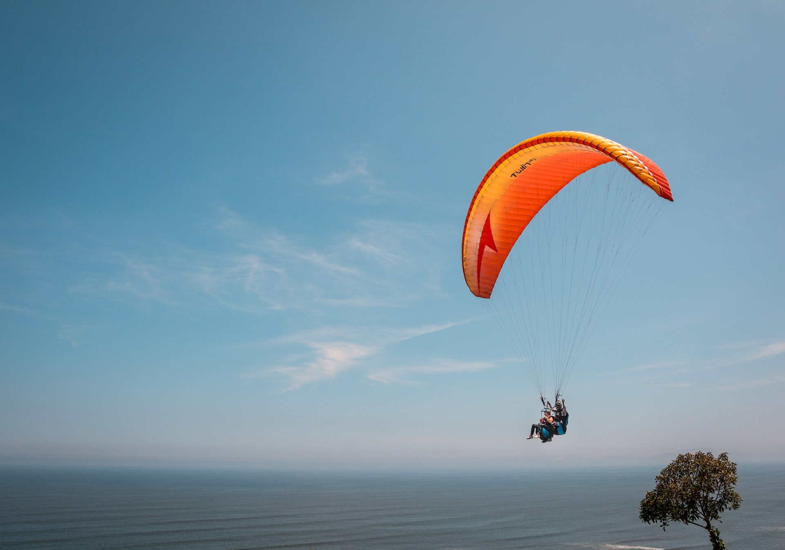
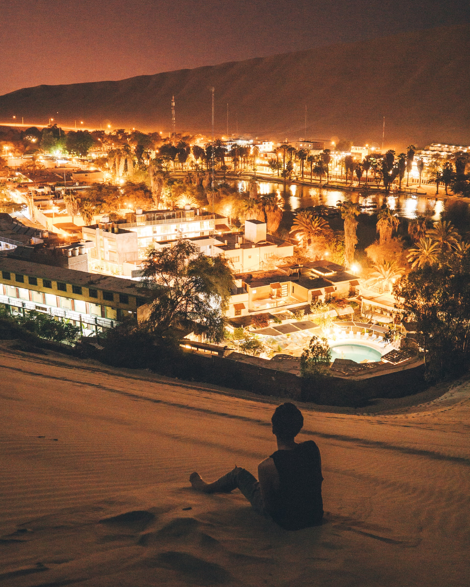
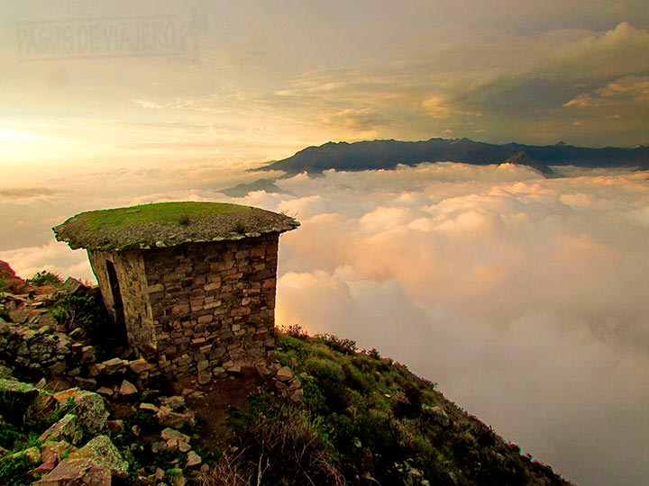

Paraglide in Miraflores
Miraflores is a district in Lima that overlooks the Pacific Ocean, and it's a popular spot for paragliding. You can take a tandem flight with an experienced pilot, soaring over the cliffs and beaches of Miraflores for a thrilling and unforgettable experience.

Visit Huacachina
Huacachina is a small oasis town located in the desert outside of Lima. It's a popular spot for sandboarding and dune buggy tours, where you can speed over the sand dunes and enjoy spectacular views of the desert landscape. You can also relax in the picturesque oasis itself, with its palm trees, lagoon, and charming restaurants and shops.

Conquer Rupac
Also known as "Lima's Machu Picchu, Rupac is an ancient Incan site located in the mountains outside of Lima. It's a challenging hike to reach the top, but the stunning views and fascinating history make it well worth the effort. Along the way, you'll see remnants of Incan walls, staircases, and buildings, as well as beautiful natural scenery.